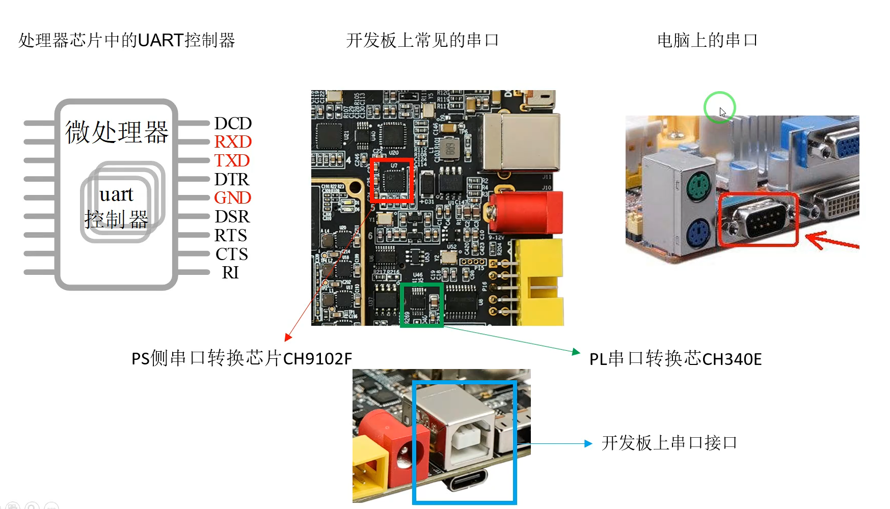
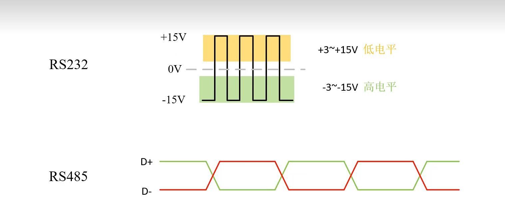
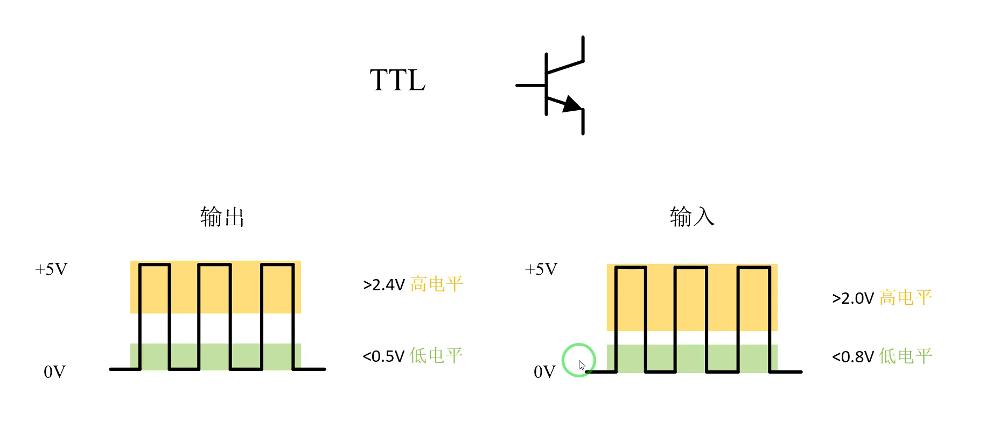
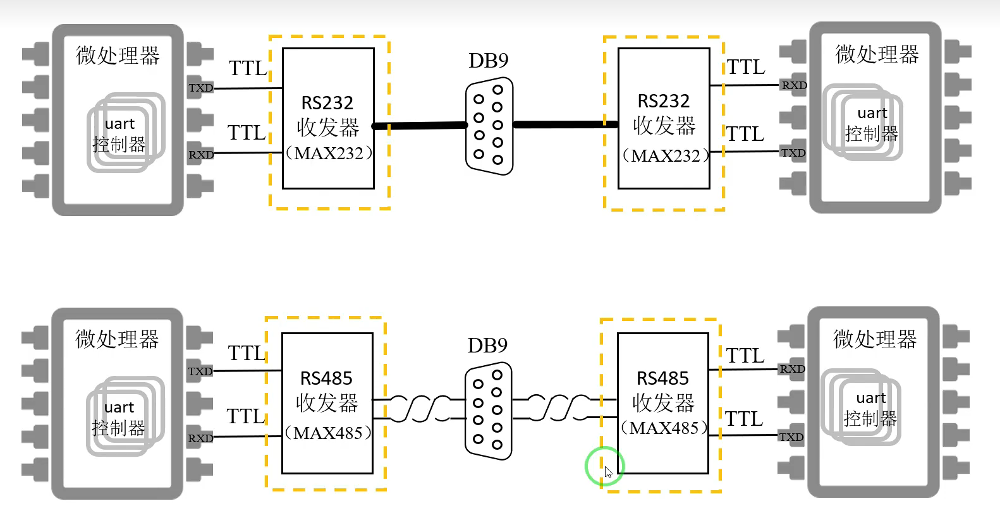
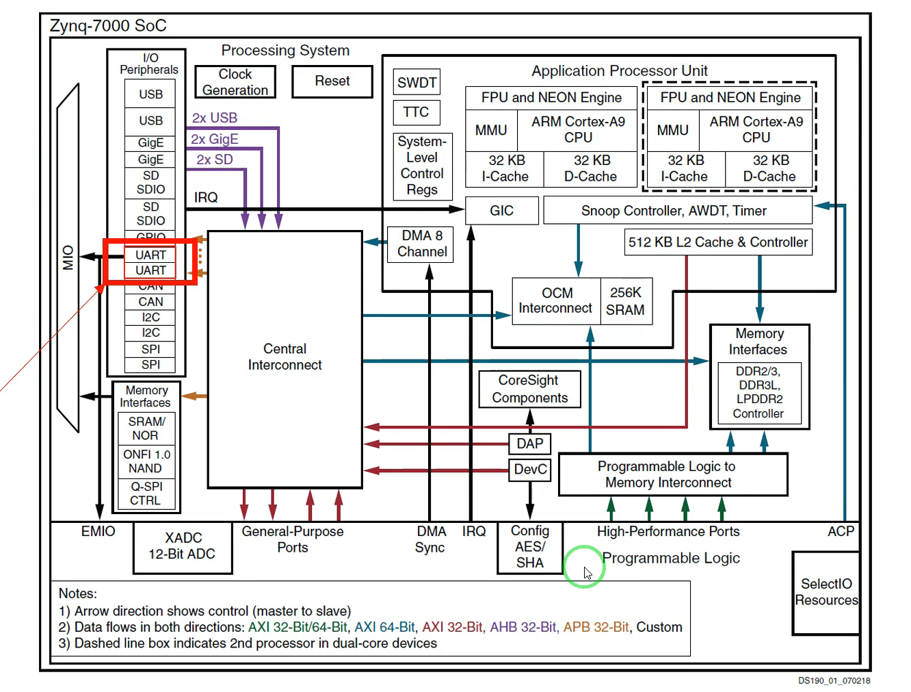
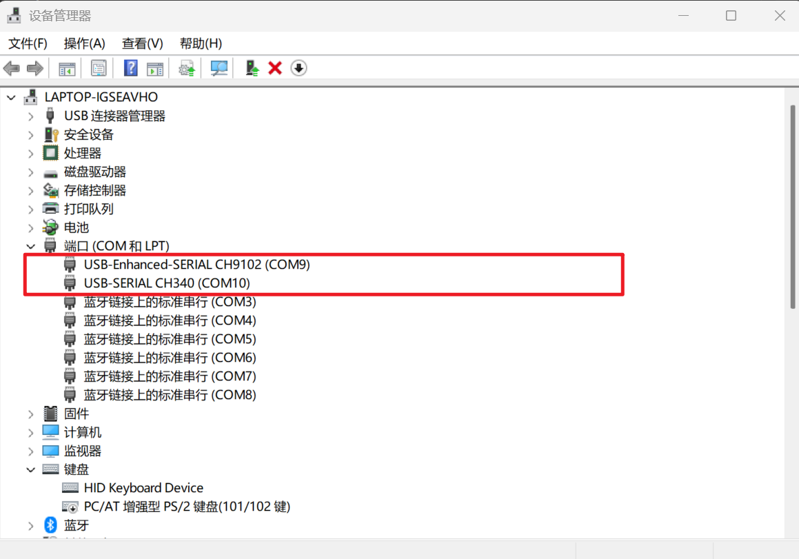
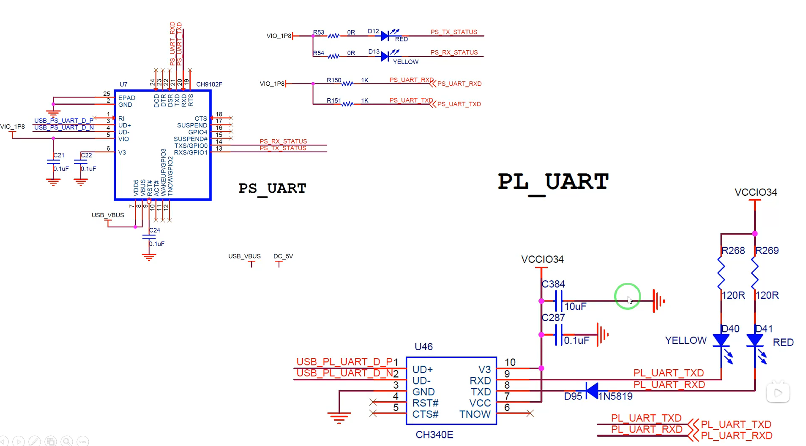
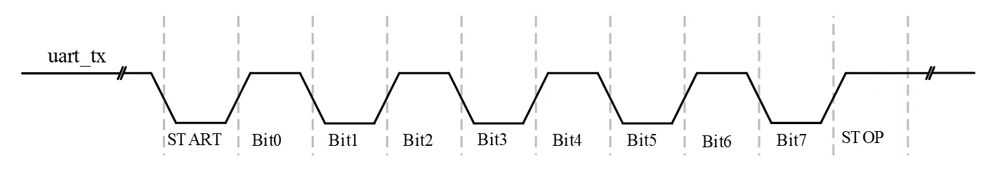
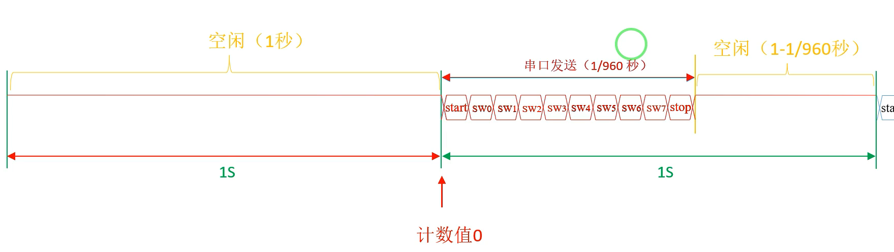
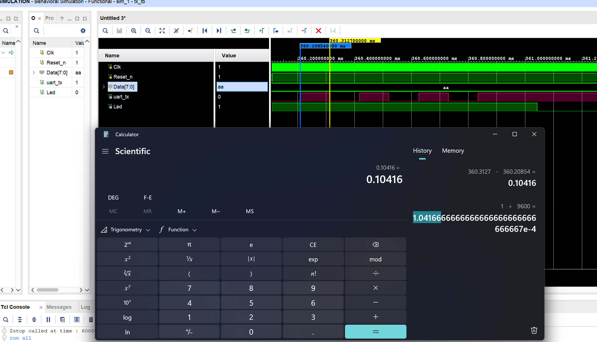

UART：通用异步收发器
全称是Universal Asynchronous Receiver/Transmitter，通用异步收发器。
是一种给串行异步的通信协议，该协议规定了传输数据时数据的传输方式以及所使用的信号。

实现系统间物理通信需按三层规范：通信协议（如UART）定义数据规则；电气标准（如RS-232/RS-485/TTL）规定信号电平；物理接口（如USB、DB9、插拔式端子）提供机械连接。

(a) RS232/RS485

(b) TTL
串行信号的逻辑值0和1最终都要通过UART控制器还原为CPU能够使用的并行数据。由于CPU接收的信号需要满足TTL电平标准，这里还需要RS485/RS232收发器，进行电气标准的转换。

在集成电路发展早期，UART控制器还会作为外置的专用芯片出现，但是现在UART基本成了单片机/微处理器/高性能SoC的标配。

当前FPGA设备选择USB接口进行串口通信，需要在电脑端装好CH9102/CH340芯片(USB 转 TTL 串口)的专用驱动。

(a) 设备管理器识别结果

(b) USB转串口电路原理图
UART控制器
UART协议收发数据的逻辑电路(UART控制器)通过Verilog工程实现。

每个bit的持续时间都和位时间相同，图中发送8位用户数据需要10位的时间。位时间是指一个码元的时间，通常用波特率(码元/秒)衡量传输性能。
发送端
uart_tx，有八位输入端口: Data[7:0],Clk,Reset_n，输出uart_tx与LED。
波特率9600——每一位占用时间 1/9600 秒。

仿真得出无法远小于+-2.5%，符合要求：
